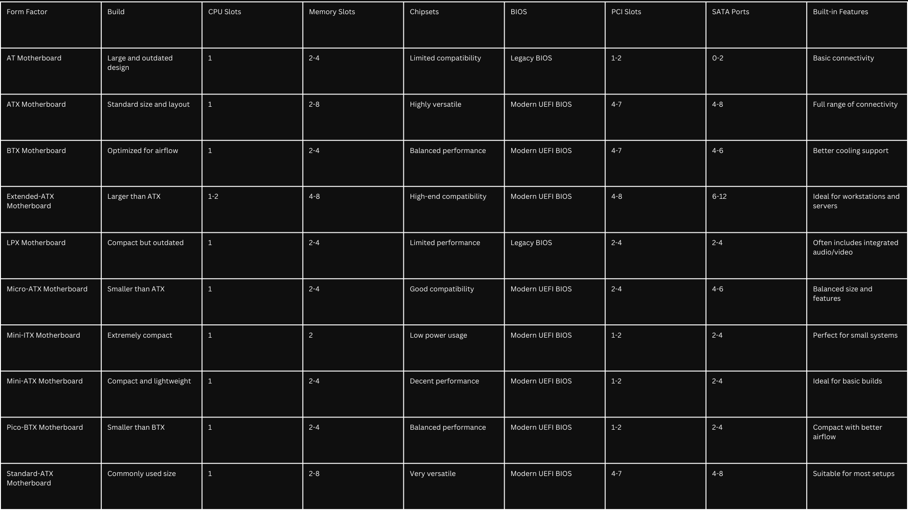

Introduction
The motherboard is the heart of the computer, as it connects all the different components of the system (Tomljanovic & Kurelovic, 2013).
It is important for the functionality as it is the core component that facilitates communication between the processor, memory, storage, and peripheral devices.
With the rapid development of technology, it is no surprise that hardware components, especially motherboards, have evolved significantly over the years.
What was once bulky with limited functions has now are now smaller, more efficient, and multifunctional.
This comparative study will examine the evolution of different motherboard form factors throughout the years, exploring how these changes were driven by technological advancements and the shifting needs of users.
By understanding the reasons behind the creation of each form factor, we can gain deeper insight as to how these motherboards have shaped modern computing as a whole
AT Motherboard
The Advanced Technology Motherboard, also known as the AT Motherboard, is the earliest form factor of the motherboards.
It was used primarily used for the Personal Computer AT that was introduced by IBM.
Due to its bulky size and far outdated build, it hasn’t found any good use in the last few years.
ATX Motherboard
The ATX Motherboards was kickstarted by Intel in 1995 to have a better alternative to the AT Motherboard.
With the introduction of the ATX form factor, Intel revolutionized the PC industry, offering more flexible and efficient design that improved airflow, power distribution, and expandability.
It featured a more standardized layout with improved mounting points, expansion slots, and I/O ports, which made it really easy for manufacturers to build and upgrade their own systems.
BTX Motherboard
Introduced by Intel on 2004, the Balanced Technology Extended (BTX) Motherboard improved the cooling system of the ATX form factor.
By redesigning the previous layout of the motherboard the BTX addressed the thermal cooling challenges posed by the increasing processing power and heat output in the early 2000s.
Although the form factor sounds far better than the ATX model in paper, in never really caught on due to the momentum behind ATX-based systems.
E-ATX Motherboard
The Extended-ATX (E-ATX) Motherboard, unlike the ATX form factor, is a motherboard that is designed for high performance computing.
It was introduced right after the ATX to meet the demands for more powerful systems.
It’s one of the few form factors that supports dual CPUs, making it ideal for tasks that require significant processing power, such as 3D rendering, video editing, and scientific simulations.
With its larger size, the E-ATX has more space to allocate for expansion slots, advanced features, and enhanced functionality.
LPX Motherboard
The Low Profile eXtended (LTX) Motherboard introduced by Intel in 1987 as a more compact alternative for AT and ATX motherboards.
It was designed to fit into smaller cases, which catered for those people that wanted to keep a low-profile, as the name suggests, design without sacrificing essential functions for desktop computers.
Unfortunately, due to flexible and more powerful form factors, the LPX Motherboard has became obsolete.
Micro-ATX Motherboard
The Micro-ATX Motherboard is a smaller, more compact version of the standard ATX Motherboard introduced by Intel in 1997.
Similar to the LPX Motherboard its goal was to cater to people who wanted to keep a low-profile, which opted for smaller computer parts.
It has remained a popular motherboard primarily due to the balance it offers in size, features, and affordability.
Mini-ITX Motherboard
The Mini-Information Technology eXtended (Mini-ITX) Motherboard is a form factor designed for ultra-compact builds.
Introduced by VIA Technology in 2001, it was created as a smaller alternative to the larger ATX motherboards.
While Mini-ITX offers enhanced portability and compactness, it sacrifices expansion slots and RAM capacity in exchange for its reduced size.
Mini-ATX Motherboard
Introduced in 1997 by Intel, the Mini-ATX motherboard is a form factor that provides a balance between size and expandability.
It was designed as a smaller alternative to the standard ATX motherboard.
Unlike the Mini-ITX, the Mini-ATX offers more expansion options and RAM capacity, providing more flexibility to those that wants to build a compact system with it.
Pico-BTX Motherboard
The Pico BTX motherboard is a compact form factor designed after the previous BTX motherboard to offer compactability for ultra-small and space-constrained systems.
While still maintaining the thermal management, the Pico BTX offered reduced expansion capabilities, with limited PCI slots and memory slots,
making it suitable for more basic computing needs where space-saving and efficient cooling were the primary focus.
Standard-ATX Motherboard
The Advanced Technology Extended (ATX) Motherboard, was made by Intel on 1995 after the AT form factor to address the previous model’s shortcomings.
Due to the design being very successful and adaptable, it is still widely used today in a lot of personal computers despite being made almost 30 years ago.
Its build and support for different functions in a computer is still very much up to date.
Table
A table for better demonstration:

References
Tomljanovic, M., & Kurelovic, M. (2013). Motherboard and user experience. ResearchGate.
https://www.researchgate.net/publication/261424537_Motherboard_and_user_experience
GeeksforGeeks. (n.d.). What is a motherboard? GeeksforGeeks.
https://www.geeksforgeeks.org/what-is-a-motherboard/
Miller, C. (2004). Upgrading and repairing PCs (15th ed.). Pearson Education.
https://ptgmedia.pearsoncmg.com/imprint_downloads/informit/que/upgrading/fifteenth_edition/book_samples/sc04_0789729741.pdf
GeeksforGeeks. (n.d.). Types of motherboards. GeeksforGeeks.
https://www.geeksforgeeks.org/types-of-motherboards/
Spiceworks. (2021, February 9). Mini-ITX vs. MicroATX. Spiceworks.
https://www.spiceworks.com/tech/tech-general/articles/mini-itx-vs-microatx/
Lenovo. (n.d.). What is LPX? Lenovo. https://www.lenovo.com/us/en/glossary/what-is-lpx/
Lenovo. (n.d.). What is BTX? Lenovo. https://www.lenovo.com/ca/en/glossary/btx/